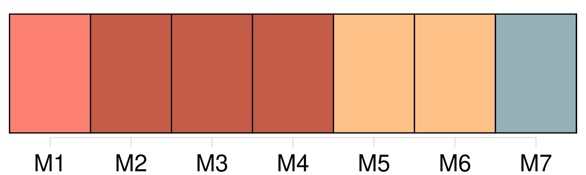
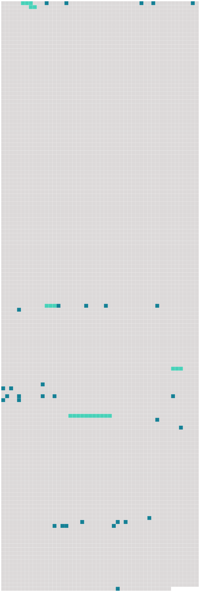

Longueur nb maillons : 36 mentions |
 |
Au seuil du chenil, [un chien unique] , flottant dans [sa] peau trop large où [ses] muscles détendus se dessinaient en lignes flasques, sommeillait le museau posé sur l'oreiller peu rembourré de [ses] pattes ; [il] paraissait tellement habitué à la solitude du lieu qu' [il] avait renoncé à toute surveillance, et ne [s'inquiétait] point, comme les chiens, même assoupis, ont coutume de le faire, au moindre bruit qui se fait entendre. [86 phrases] Le battant s'ouvrit ; Pierre se leva, ôta respectueusement son béret, et le nouveau venu fit son apparition dans la salle, précédé [du vieux chien] [dont] nous avons déjà parlé, et [qui] essayait une gambade et [retombait] lourdement, appesanti par l'âge. Béelzébuth ne témoignait pas à [Miraut] l'antipathie que ses pareils professent d'ordinaire pour la gent canine. Il [le] regardait au contraire fort amicalement, en roulant ses prunelles vertes et en faisant le gros dos. [18 phrases]
Sigognac, tout pauvre qu'il fût, était toujours à leurs yeux le seigneur, et la décadence de cette famille ne les frappait pas comme elle eût fait les étrangers ; et c'était cependant un spectacle assez grotesquement mélancolique que de voir passer le jeune baron dans ses vieux habits, sur son vieux cheval, accompagné de [son vieux chien] , comme ce chevalier de la Mort de la gravure d'Albert Dürer. [2 phrases] Ce mets local avec la garbure graissée par un morceau de lard dérobé, sans doute, à l'appât d'une souricière, vu son exiguïté, formait le frugal repas du Baron, qui mangeait d'un air distrait entre [Miraut] et Béelzébuth, tous deux en extase et le museau en l'air de chaque côté de sa chaise, attendant qu'il tombât sur eux quelques miettes du festin. De temps à autre le Baron jetait à [Miraut] , [qui] ne laissait pas arriver le morceau à terre, une bouchée de pain à laquelle il avait fait toucher la tranche de lard pour lui donner au moins le parfum de la viande. [2 phrases] [Miraut] avait posé [sa] tête sur le genou de [son] maître et [fixait] sur lui des yeux voilés par l'âge d'une fleur bleuâtre, mais que semblait vouloir percer une étincelle d'intelligence presque humaine. On eût dit qu' [il] comprenait les pensées du Baron et [cherchait] à lui témoigner [sa] sympathie. [4 phrases]
D'une famille jadis puissante et riche il ne restait qu'un rejeton isolé, errant comme une ombre dans ce manoir peuplé par ses aïeux ; d'une livrée nombreuse il n'existait plus qu'un seul domestique, serviteur par dévouement, qui ne pouvait être remplacé ; d'une meute de trente chiens courants il ne survivait qu' [un chien unique, presque aveugle et tout gris de vieillesse] , et un chat noir servait d'âme au logis désert. [1 phrases]
Pierre, se baissant au foyer, alluma un éclat de bois de pin enduit de résine, sorte de chandelle économique qu'emploient les pauvres paysans, et se mit à précéder le jeune seigneur ; [Miraut] et Béelzébuth se joignirent au cortège : la lueur fumeuse de la torche faisait vaciller sur les murailles de l'escalier les fresques pâlies et donnait une apparence de vie aux portraits enfumés de la salle à manger dont les yeux noirs et fixes semblaient lancer un regard de pitié douloureuse sur leur descendant. Arrivé à la chambre à coucher fantastique que nous avons décrite, le vieux serviteur alluma une petite lampe de cuivre à un bec dont la mèche se repliait dans l'huile comme un ténia dans l'esprit-de-vin à la montre d'un apothicaire, et se retira suivi de [Miraut] [30 phrases] Un hurlement prolongé de [Miraut] s'élevant au milieu du silence vint bientôt confirmer la pantomime du chat ; il se passait décidément quelque chose d'insolite aux environs du castel, d'ordinaire si tranquille. [Miraut] continuait d'aboyer avec toute l'énergie que [lui] permettait [son] enrouement chronique. [1 phrases] « Qu'a donc [Miraut] , [lui] [qui] ronfle comme le chien des Sept-Dormants, sur la paille de [sa] niche, dès que le soleil est couché, pour faire un pareil vacarme?? [24 phrases] Pendant ce colloque, Pierre, éveillé par les abois de [Miraut] , s'était levé et avait rejoint son maître sous le porche. |
 |
Il est possible de télécharger la ressource sur la page Ortolang |
Si vous avez des questions ou vous voyez des erreurs, merci d'envoyer un mail à silvia.federzoni89@gmail.com |